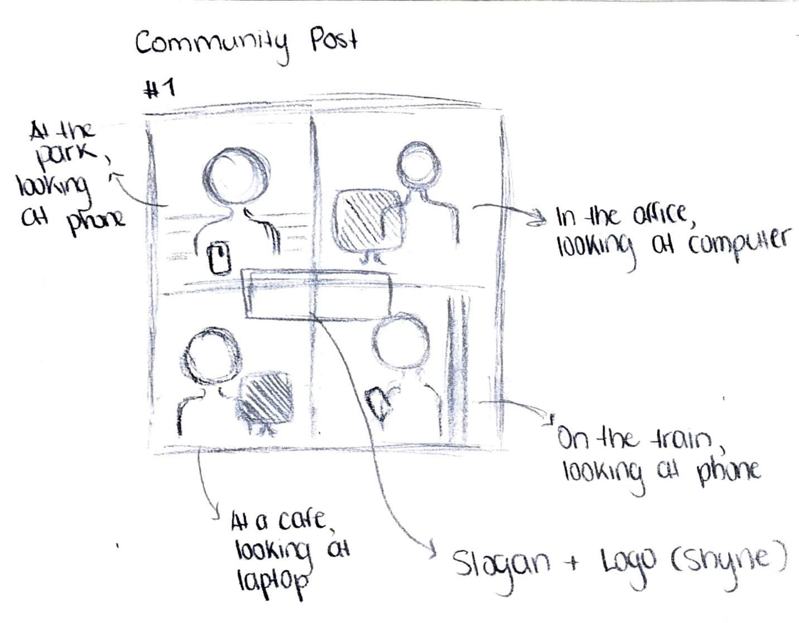
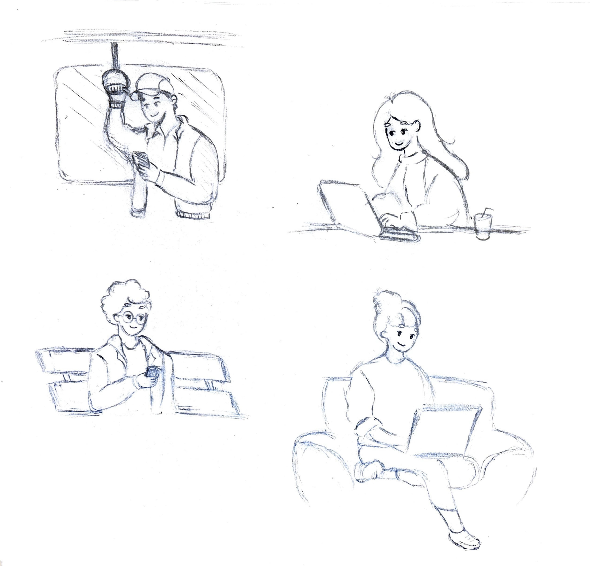

For our project, we decided to create a webpage where users can send a positive message anonymously every 24 hours. Not only can you encourage and motivate someone by writing a message, but you will also receive one from another user. Our goal for this project is to build a respectful and supportive community, fostering motivation and encouragement to help one another during both good and bad times.
Team members
Ngoc Trang Bin - Logo Designer
Emma - Graphic elements
Yousef - Little animations/ Character designer
Seo Jin - (Frontend) Website Design
Aaliyah - (Frontend) Website Design
Tyler - (Backend) Programming
Rachelle - Visual/Promotional material
Sara - Visual (Website/promotional material)
Luca - Mock up social media posts
Remi - Mock up social media posts
Team's Process
Our team started by discussing what we wanted to do in order to attain our goal of building a respectful and supportive community with motivation and kindness on Discord, before meeting up during the Capython week. During Capython, we divided tasks and assigned roles, ensuring everyone had a clear responsibility in creating the webpage.
We used Figma to create our mood boards, track availabilities, plan our media campaign, and address problems and solutions. It also served to create our plans and presentations, and to reflect on our capyskills. Throughout the process, we kept in touch via Discord to keep up with each other's progress, share feekback and ask help if needed.
In the end, we all managed to complete our tasks on time, and we created an amazing webpage that helped us achieve our goal!
Click here to check out our Figma!
My Role
As for my role, all the first-year students worked on the mock marketing campaign. I created an Instagram post to highlight the project’s values of belonging and community. I made sure the design and message would connect with our audience, focusing on kindness and helping others. The goal was to create a post that would encourage people to engage and show how the platform can have a positive impact.
My Work
Sketches
When creating the Instagram post, I wanted to showcase that the project is about building a friendly, respectful, and positive community. To do this, I sketched four people to represent different backgrounds and highlight how we’re all connected. Each person was drawn to emphasize that the platform is for everyone. I briefly sketched where I wanted to place the mascot of our webpage, along with a positive and kind message, in the center of the post. This design effectively communicated the message of togetherness and support, which is the main goal of the project.


Final Product
After sketching, I began designing the final product in Illustrator. As you can see, I made sure the characters filled the post to create a sense of community. Additionally, I used vibrant colors for each character to show that, regardless of cultural differences, people can still connect and become friends. Finally, I added the mascot of our webpage in the center, along with a positive and kind message, to clearly communicate the purpose of our platform.
CapySkill
HOS 1.1 - Manage Task and Deadlines (Level 10)
For this project, I used Notion to track deadlines and break the work into steps, ensuring everything stayed on track and was completed on time. For my part, I managed to finish the community post a day before the deadline, and before finalizing it, I asked Sara for feedback and carefully considered her suggestions. She pointed out a minor mistake I had made, which I was able to fix, thanks to her helpful input.
This is a screenshot of my plan during the Capython week